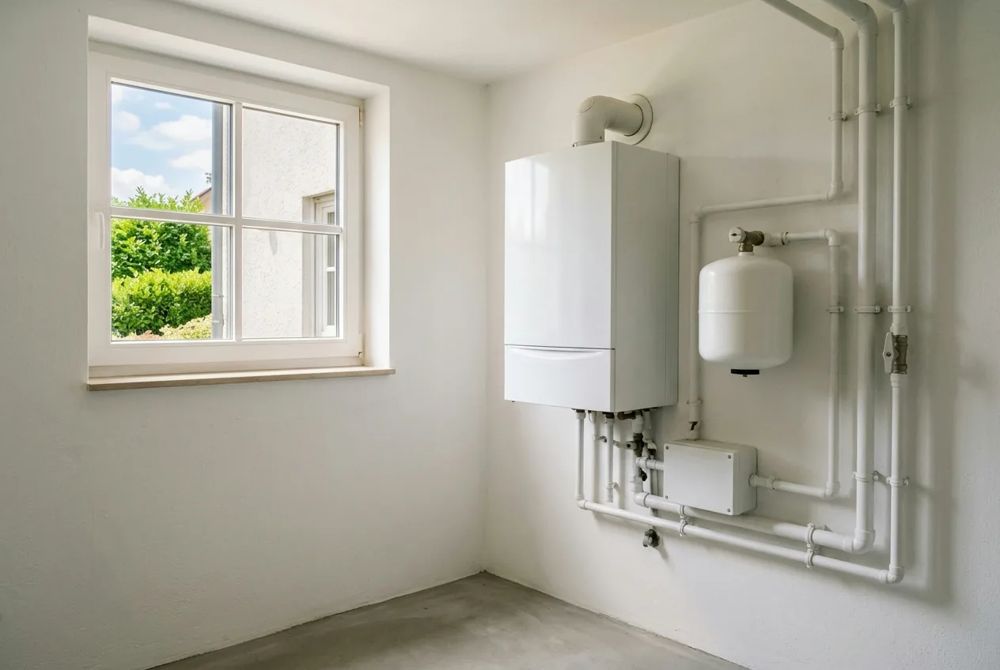
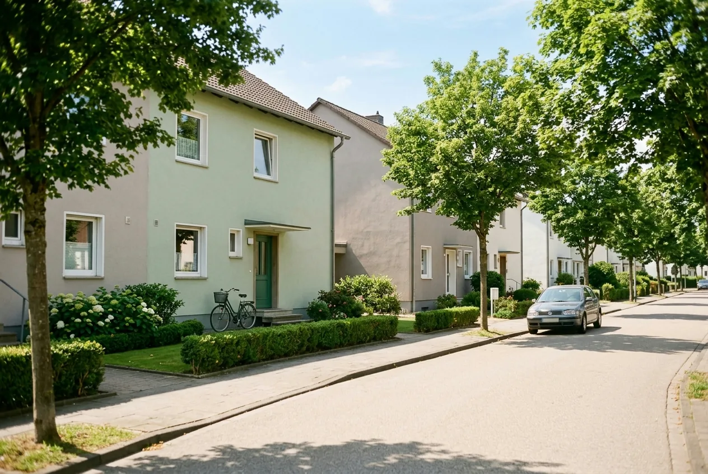

Inhaltsverzeichnis
- Was der Bonus ist, wie hoch er ist
- Voraussetzungen im Überblick
- Altanlage und 20-Jahre-Regel
- Demontage und Entsorgung
- Biomasse: Kombinationspflicht weg
- Degressionsfahrplan bis 2030
- Was das in Euro bedeutet
- Abgrenzung zu anderen Boni
- Lohnt sich Eile wirklich?
- Anspruch vorher prüfen lassen
- Fazit
- Kurz und direkt beantwortet
- Häufige Fragen
Das Wichtigste in Kürze
- 16 Prozentpunkte: Aktueller Satz bei Antragstellung zwischen dem 21.07.2026 und dem 31.01.2027. Die früheren 20 Prozent galten nur bis zum 20. Juli 2026.
- Halbjährliche Degression: 12 Prozentpunkte ab 01.02.2027, 8 ab 01.08.2027, 4 ab 01.02.2028 — ab 01.08.2028 entfällt der Bonus.
- Der Antrag zählt: Maßgeblich ist der Zeitpunkt der Antragstellung, nicht der Einbau und nicht die Rechnung.
- Nur Selbstnutzer: Vermieter erhalten den Bonus nicht; im Mehrfamilienhaus gibt es ihn nur anteilig für die selbstgenutzte Wohneinheit.
- Funktionstüchtig heißt funktionstüchtig: Nur der Austausch einer noch laufenden Altanlage berechtigt zum Bonus. Wer bis zum Ausfall wartet, riskiert den Anspruch.
- Häufig übersehen: Die alte Heizung muss fachgerecht demontiert und entsorgt werden — sonst kein Bonus.
Was der Klimageschwindigkeitsbonus ist — und wie hoch er aktuell ist
Der Klimageschwindigkeitsbonus ist kein eigenes Förderprogramm und kein Geldbetrag, den Sie separat beantragen. Er ist ein Aufschlag auf den Fördersatz der Heizungsförderung: Zur Grundförderung von 30 Prozent kommen Prozentpunkte hinzu, und erst die Summe wird auf Ihre förderfähigen Kosten angewendet. Deshalb liest man ihn mal als „16 Prozent“, mal als „16 Prozentpunkte“ — gemeint ist dasselbe.
Der Zweck steckt im Namen: Gefördert wird nicht der Heizungstausch an sich, sondern das Tempo. Wer eine alte, aber noch laufende Heizung früher ersetzt, als er müsste, bekommt den Aufschlag; wer wartet, bis die Anlage ohnehin ausfällt, geht leer aus. Diese Logik erklärt fast alle Voraussetzungen, die folgen.
Für den Heizungstausch ist seit 2024 die KfW zuständig (Programm 458), für Gebäudehülle, Anlagentechnik und Heizungsoptimierung das BAFA. Beide Töpfe gehören zur Bundesförderung für effiziente Gebäude (BEG), werden aber getrennt beantragt — Details dazu in unserem Beitrag zur Heizungsförderung KfW 458 als Zuschuss.
Die aktuelle Höhe — und warum viele Ratgeber noch 20 Prozent zeigen
Seit der BEG-Reform vom 21. Juli 2026 beträgt der Klimageschwindigkeitsbonus 16 Prozentpunkte, gültig für Anträge zwischen dem 21.07.2026 und dem 31.01.2027. Bis zum 20. Juli 2026 lag er bei 20 Prozent — dieser Wert ist überholt.
Damit setzt sich der Heizungszuschuss derzeit so zusammen: 30 Prozent Grundförderung, dazu ein Klimageschwindigkeitsbonus von 16 Prozent und ein Einkommensbonus von 10 bis 40 Prozent. Der frühere Effizienzbonus von 5 Prozent und der Emissionsminderungszuschlag von 2.500 Euro sind entfallen. Insgesamt sind maximal 70 Prozent möglich — und 80 Prozent für selbstnutzende Eigentümer mit einem zu versteuernden Haushaltsjahreseinkommen bis 30.000 Euro.
Dass Sie im Netz weiterhin auf 20 Prozent stoßen, hat einen banalen Grund: Viele Ratgeberseiten entstanden vor dem Stichtag und wurden nie aktualisiert. Manche nennen zusätzlich eine Gültigkeit „bis Ende 2028“ — das entspricht nicht der seit dem 21. Juli 2026 geltenden Fassung. Auch amtliche Übersichts-PDFs sind keine sichere Bank: Eine vom BAFA verlinkte Förderübersicht trug zum Redaktionsschluss noch den Stand März 2025. Verlässlich sind allein die Richtlinie BEG EM vom 17. Juli 2026 und das KfW-Merkblatt 458.
Ein Detail, das gern untergeht: Wer durch Grundförderung und Einkommensbonus schon am Deckel von 70 oder 80 Prozent liegt, dem bringen zusätzliche Prozentpunkte nichts mehr. Was das bedeutet, zeigt unser Rechenbeispiel zur Wärmepumpen-Förderung 2026.
Wer den Bonus bekommt: die Voraussetzungen vollständig
Der Bonus hat mehr Bedingungen als jeder andere Baustein der Heizungsförderung, und Sie müssen alle erfüllen — nicht die meisten:
- Selbstnutzung: nur selbstnutzende Eigentümerinnen und Eigentümer, und nur für die selbstgenutzte Wohneinheit. Vermietete Einheiten sind ausgeschlossen.
- Funktionstüchtige Altanlage: Die alte Heizung muss funktionstüchtig sein. Ein Notfall-Austausch nach einem Totalausfall erfüllt die Bedingung nicht.
- Zulässiger Anlagentyp: Öl-, Kohle-, Gas-Etagen- und Nachtstromspeicherheizungen berechtigen altersunabhängig. Gas-Zentralheizungen und Biomasseheizungen erst, wenn die Inbetriebnahme mindestens 20 Jahre zurückliegt — Stichtag ist die Antragstellung.
- Fachgerechte Demontage und Entsorgung: Die Altanlage muss fachgerecht ausgebaut und entsorgt werden — eine echte Anspruchsvoraussetzung, keine Empfehlung.
- Kein fossiler Weiterbetrieb: Nach dem Austausch dürfen die versorgten Einheiten nicht mehr fossil beziehungsweise gasbetrieben versorgt werden. Ausgenommen sind Brennstoffzellen und wasserstofffähige Heizungen.
- Mehrfamilienhaus: Bei mehreren Wohneinheiten gibt es den Bonus nur anteilig nach dem Anteil der selbstgenutzten Wohneinheit.
Die Grundförderung von 30 Prozent hängt an keiner dieser Bedingungen. Wer vermietet oder wessen Gas-Zentralheizung noch keine 20 Jahre alt ist, sollte deshalb von vornherein mit 30 Prozent kalkulieren, nicht mit 46.

Welche alte Heizung zählt — und wann die 20-Jahre-Regel greift
Die 20-Jahre-Regel gilt nur für einen Teil der Anlagen — bei anderen spielt das Alter keine Rolle. Die häufigste Fehlannahme lautet deshalb: „Meine Heizung muss 20 Jahre alt sein.“
| Alte Heizung | Altersanforderung | Weitere Bedingung |
|---|---|---|
| Ölheizung | keine — altersunabhängig | funktionstüchtig |
| Kohleheizung | keine — altersunabhängig | funktionstüchtig |
| Gas-Etagenheizung | keine — altersunabhängig | funktionstüchtig |
| Nachtstromspeicherheizung | keine — altersunabhängig | funktionstüchtig |
| Gas-Zentralheizung | mindestens 20 Jahre seit Inbetriebnahme | funktionstüchtig |
| Biomasseheizung | mindestens 20 Jahre seit Inbetriebnahme | funktionstüchtig |
Der praktisch wichtigste Fall ist die Gas-Brennwertheizung, die vor 15 oder 18 Jahren eingebaut wurde: ein häufiger Tausch-Kandidat, aber ohne Anspruch auf den Bonus. Umgekehrt berechtigt eine Gas-Etagenheizung sofort, unabhängig vom Baujahr. Der Unterschied zwischen Etagen- und Zentralheizung entscheidet hier über einen vierstelligen Betrag.
Maßgeblich ist das Datum der Inbetriebnahme, gerechnet auf den Tag der Antragstellung. Wer eine Gasheizung kurz vor der 20-Jahre-Grenze hat, sollte dieses Datum sauber belegen können — über Typenschild, Anlagendokumentation, Schornsteinfeger-Protokoll oder die ursprüngliche Rechnung. Wenn der Nachweis wackelt, wackelt der Bonus.
Demontage und Entsorgung: die Voraussetzung, die in vielen Ratgebern fehlt
Der Klimageschwindigkeitsbonus setzt die fachgerechte Demontage und Entsorgung der alten Heizung voraus. Es genügt nicht, den alten Kessel abzuklemmen und stehen zu lassen. Diese Bedingung steht ausdrücklich in der Richtlinie, fehlt in Ratgebertexten aber regelmäßig.
Dazu gehört die zweite Hälfte derselben Regel: Nach dem Austausch dürfen die betroffenen Wohneinheiten nicht mehr fossil beziehungsweise gasbetrieben versorgt werden; ausgenommen sind nur Brennstoffzellen und wasserstofffähige Heizungen. Wer die alte Gastherme „für alle Fälle“ als Reserve im Keller belässt, erfüllt sie nicht.
Praktisch heißt das: Demontage und Entsorgung gehören als benannte Position in das Angebot des Fachbetriebs und sollten sich in den Nachweisunterlagen wiederfinden. Liegen zwei Angebote weit auseinander, ist die Entsorgung von altem Öltank oder Kessel erfahrungsgemäß einer der Gründe. Achten Sie auf denselben Leistungs- und Lieferumfang, sonst vergleichen Sie Zahlen, die nicht vergleichbar sind.
Biomasse: Die Kombinationspflicht ist entfallen
Die KfW stellt in ihren FAQ zum Programm 458 klar: Um den Klimageschwindigkeitsbonus zu erhalten, muss die Biomasseheizung nicht mehr mit einer der drei bisher genannten Anlagen kombiniert werden. Bis zur Reform galt hier eine Sonderregel: Den Bonus gab es nur, wenn die Biomasseheizung mit einer weiteren Anlage kombiniert wurde. Das ist vorbei.
Wichtig ist der Zusatz, den die KfW selbst mitliefert: Die Technik hinter der Bestätigung zum Antrag (BzA) bildet diese Änderung möglicherweise noch nicht ab; bis zur Anpassung soll die Kombination im Formular vorerst weiter eingetragen werden. Wenn Ihr Fachbetrieb oder Energieeffizienz-Experte hier stutzt: Das ist bekannt und kein Fehler in Ihrem Vorhaben.
Für Sie heißt das: Eine reine Pellet- oder Scheitholzheizung kann den Bonus auslösen, sofern alle übrigen Voraussetzungen erfüllt sind.
Haben Sie überhaupt Anspruch auf den Bonus?
Alter und Art der Altanlage, Selbstnutzung, Nachweise: Ob der Klimageschwindigkeitsbonus in Ihrem Fall greift, entscheidet sich an Details — und macht bei 28.000 Euro förderfähigen Kosten 4.480 Euro Unterschied. Wir prüfen Ihre Ausgangslage und Ihr Handwerker-Angebot auf Förderfähigkeit, bevor Sie unterschreiben.
Kostenlose Erstberatung sichernDer Degressionsfahrplan bis 2030 im Überblick
Der Bonus sinkt erstmals zum 1. Februar 2027 und danach halbjährlich um 4 Prozentpunkte. Davon unabhängig sinken die förderfähigen Höchstkosten für die erste Wohneinheit um 750 Euro pro Halbjahr. Beide Kurven laufen gleichzeitig, deshalb stehen sie hier zusammen:
| Antragstellung im Zeitraum | Klimageschwindigkeitsbonus | Förderfähige Höchstkosten (1. WE) |
|---|---|---|
| 21.07.2026 – 31.01.2027 | 16 % | 28.000 € |
| 01.02.2027 – 31.07.2027 | 12 % | 27.250 € |
| 01.08.2027 – 31.01.2028 | 8 % | 26.500 € |
| 01.02.2028 – 31.07.2028 | 4 % | 25.750 € |
| 01.08.2028 – 31.01.2029 | entfällt | 25.000 € |
| 01.02.2029 – 31.07.2029 | entfällt | 24.250 € |
| 01.08.2029 – 31.01.2030 | entfällt | 23.500 € |
| 01.02.2030 – 31.07.2030 | entfällt | 22.750 € |
| ab 01.08.2030 | entfällt | 22.000 € |
Maßgeblich ist immer der Zeitpunkt der Antragstellung, nicht der Einbau. Sie müssen nicht bis zum Stichtag fertig gebaut haben — nur den Antrag gestellt haben. Nach der Zusage bleiben 36 Monate für die Umsetzung.
Damit rückt eine andere Regel in den Vordergrund: Vor der Antragstellung muss ein Liefer- oder Leistungsvertrag mit aufschiebender oder auflösender Bedingung geschlossen sein. Ein unbedingter Vertragsabschluss oder der tatsächliche Baubeginn vor dem Antrag gilt als Vorhabenbeginn und schließt die Förderung aus. Wer auf einen Stichtag hin plant, plant also nicht den Handwerkertermin, sondern die Kette aus Angebot, Bestätigung zum Antrag und bedingtem Vertrag — Details in unserer Anleitung zum richtigen Beantragen der Wärmepumpen-Förderung.
Was das in Euro bedeutet: derselbe Tausch, drei Antragszeitpunkte
Ein halbes Jahr später beantragt kostet in diesem Beispiel rund 1.435 Euro Zuschuss, ein Antrag ab August 2028 rund 5.380 Euro. Szenario: selbstgenutztes Einfamilienhaus, Austausch einer 22 Jahre alten, funktionstüchtigen Gas-Zentralheizung gegen eine Luft-Wasser-Wärmepumpe, förderfähige Kosten 28.000 Euro, Anspruch auf den Bonus besteht. Das Haushaltseinkommen liegt über 60.000 Euro — kein Einkommensbonus, Deckel nicht erreicht.
| Antragstellung | Grundförderung | Klimageschwindigkeitsbonus | Höchstkosten | Zuschuss | Differenz |
|---|---|---|---|---|---|
| bis 31.01.2027 | 30 % | 16 % | 28.000 € | 12.880 € | — |
| 01.02. – 31.07.2027 | 30 % | 12 % | 27.250 € | 11.445 € | −1.435 € |
| 01.08.2027 – 31.01.2028 | 30 % | 8 % | 26.500 € | 10.070 € | −2.810 € |
| 01.02. – 31.07.2028 | 30 % | 4 % | 25.750 € | 8.755 € | −4.125 € |
| ab 01.08.2028 | 30 % | entfällt | 25.000 € | 7.500 € | −5.380 € |
Beispielrechnung. Prozentsätze, Deckel und Höchstkosten stammen aus Richtlinie und KfW-Merkblatt; die Euro-Beträge sind daraus abgeleitet und keine amtlich veröffentlichten Werte. Ihre tatsächlichen Kosten liegen kaum bei exakt 28.000 Euro — an der Größenordnung ändert das wenig.
Ein halbes Jahr Verzögerung kostet in diesem Szenario rund 1.435 Euro, ein Antrag erst im ersten Halbjahr 2028 rund 4.125 Euro. Das ist spürbar, aber keine Katastrophe — und weniger, als eine schlecht ausgelegte Anlage kosten kann. Wer wegen des Stichtags in ein technisch nicht durchdachtes Vorhaben rennt, spart am falschen Ende.
Wichtige Einschränkung für die Zeilen ab 2027: Die Rechnung unterstellt, dass es bei 30 Prozent Grundförderung bleibt. Das ist nicht selbstverständlich. Ab dem 1. Quartal 2027 sinkt der Grundfördersatz für elektrisch angetriebene Wärmepumpen laut Richtlinie auf 15 Prozent, gleichzeitig kommt ein neuer Wertschöpfungs-Bonus von 15 Prozentpunkten für Wärmepumpen mit Ursprung in der Union hinzu. Für ein EU-Gerät bleibt es rechnerisch bei 30 Prozent — für ein Gerät ohne EU-Ursprung halbiert sich die Grundförderung, und die Zuschüsse in den unteren Zeilen fielen niedriger aus. Wie der „Ursprung in der Union“ nachzuweisen sein wird, regelt laut Richtlinie das Infoblatt zu den förderfähigen Maßnahmen; dieses ist zum Redaktionsschluss noch nicht angepasst. Die Richtlinie nennt für diese Änderung außerdem kein taggenaues Datum, sondern nur „ab Quartal 1 2027“.
Wie sich die Bausteine bei verschiedenen Einkommen zusammensetzen und wo der Deckel greift, rechnen wir unter Einkommensbonus und Familienzuschlag 2026 durch; die Gesamtkosten nach Abzug der Förderung unter Gesamtkosten realistisch berechnen.
Abgrenzung: Effizienzbonus, Einkommensbonus und die „Austauschprämie“
Der Bonus wird regelmäßig mit anderen Bausteinen verwechselt oder mit Zuschlägen addiert, die es nicht mehr gibt. Diese Übersicht sortiert das:
| Baustein | Höhe | Status seit 21.07.2026 | Kurz erklärt |
|---|---|---|---|
| Grundförderung | 30 % | gilt | Für alle förderfähigen Heiztechniken, unabhängig von Einkommen und Selbstnutzung. |
| Klimageschwindigkeitsbonus | 16 %, sinkend | gilt | Nur Selbstnutzer, funktionstüchtige Altanlage, Entsorgungspflicht. |
| Einkommensbonus | 10–40 % | gilt | Hängt am zu versteuernden Haushaltsjahreseinkommen. Etwas völlig anderes als der Klimageschwindigkeitsbonus. |
| Effizienzbonus | 5 % | entfallen | Steht noch auf vielen Seiten. In Richtlinie und Merkblatt kommt der Begriff nicht mehr vor. |
| Emissionsminderungszuschlag | 2.500 € | entfallen | Der pauschale Zuschlag ist weg. |
| „Austauschprämie“ | — | kein Fachbegriff | Kommt in keiner Förderrichtlinie vor. Gemeint ist meist der Klimageschwindigkeitsbonus oder die Heizungsförderung insgesamt. |
Der Effizienzbonus von 5 Prozent — früher für Wärmepumpen mit Erdreich, Wasser oder Abwasser als Wärmequelle — ist mit der Reform entfallen. Wenn Sie ihn in einer Kalkulation finden, ist diese veraltet und der erwartete Zuschuss um 5 Prozentpunkte zu hoch angesetzt.
Der Emissionsminderungszuschlag von 2.500 Euro für Biomasseheizungen ist als pauschaler Zuschlag ebenfalls entfallen. Stattdessen werden Maßnahmen zur Emissionsminderung an Biomasseheizungen als Heizungsoptimierung mit 50 Prozent gefördert — allerdings beim BAFA und damit in einem eigenen Antragsverfahren.
Der Einkommensbonus ist eine eigene Größe mit eigenen Stufen. Beide setzen Selbstnutzung voraus und können nebeneinander gewährt werden — aber der eine hängt am Alter Ihrer Heizung, der andere an Ihrem Einkommen. Zusammen können sie den Deckel von 70 beziehungsweise 80 Prozent nicht überschreiten. Den Überblick gibt unser Beitrag zur BEG-Reform 2026 mit allen Änderungen ab dem 21.07.2026.
Wann sich Eile wirklich lohnt — und wann nicht
Die ehrliche Antwort hängt vom Zustand Ihrer Anlage ab, nicht vom Kalender. Fast jeder Ratgeber endet mit „jetzt handeln“ — das ist bequem, hilft bei der Entscheidung aber nicht.
Fall 1: Die Heizung läuft, ist aber alt
Der Fall, für den der Bonus gemacht ist: Sie haben Zeit, sauber zu planen, und einen Anspruch, der mit jedem Halbjahr kleiner wird. Zügig, aber geordnet vorgehen — Heizlast prüfen, Angebot einholen, Bestätigung zum Antrag erstellen lassen, bedingten Vertrag schließen, Antrag stellen. Stichtag: 31. Januar 2027.
Fall 2: Die Heizung ist defekt oder kurz davor
Hier kippt die Logik: Wer wartet, bis die Anlage endgültig ausfällt, verliert nicht nur Komfort, sondern womöglich den Anspruch selbst.
Die wichtigste Praxisinformation dieses Artikels: Nur der Austausch einer funktionstüchtigen Altanlage berechtigt zum Klimageschwindigkeitsbonus. Wer bis zum Ausfall wartet, kann den Bonus verlieren — im Beispiel oben 4.480 Euro bei 28.000 Euro förderfähigen Kosten. Die Degression über die Halbjahre ist dagegen das kleinere Risiko. Eine erkennbar am Ende stehende Heizung ist damit ein stärkeres Argument für zügiges Handeln als jeder Stichtag im Kalender.
Fall 3: Die Gas-Zentralheizung ist noch keine 20 Jahre alt
Dann gibt es aktuell keinen Bonus — und das Warten auf den 20. Geburtstag der Anlage ist eine Rechnung mit zwei gegenläufigen Größen. Erreicht Ihre Gas-Zentralheizung die 20 Jahre erst ab August 2027, gäbe es den Bonus dann nur noch mit 8 statt 16 Prozentpunkten und auf gesunkene Höchstkosten; zwischen Februar und Juli 2027 wären es 12. Ob das mehr bringt als ein Tausch mit 30 Prozent heute, hängt vom Abstand zum Stichtag ab und lässt sich nicht pauschal beantworten.
Fall 4: Sie vermieten
Dann ist die Degression für Sie kein Thema: Vermieter erhalten weder den Klimageschwindigkeitsbonus noch den Einkommensbonus, es bleibt bei der Grundförderung. Die förderfähigen Höchstkosten für die erste Wohneinheit sinken aber unabhängig vom Bonus jedes Halbjahr um 750 Euro.
Für alle Fälle gilt zusätzlich der oben beschriebene Systemwechsel bei Wärmepumpen ab dem 1. Quartal 2027; da die Richtlinie dafür kein taggenaues Datum nennt, sollte den Antrag bis Ende 2026 stellen, wer ihm sicher zuvorkommen will. Was sich sonst an den Boni verschoben hat, steht unter Heizungsförderung 2026: Was sich an den Boni ändert.

Bevor Sie auf den Bonus hin kalkulieren: Anspruch prüfen
Der teuerste Fehler ist nicht ein verpasster Stichtag, sondern eine Finanzierung, die mit 46 Prozent rechnet, obwohl nur 30 Prozent zustehen: 4.480 Euro, die im Haushaltsplan fehlen — und das merkt man erst, wenn der Bescheid da ist. Deshalb steht am Anfang die Prüfung, nicht die Terminplanung. Konkret klären wir für Sie:
- Anlagentyp, Alter und Nachweise: altersunabhängig berechtigt oder 20-Jahre-Regel — und trägt der Beleg für die Inbetriebnahme?
- Selbstnutzung: welche Wohneinheit Sie selbst nutzen und welcher Anteil im Mehrfamilienhaus bonusfähig ist.
- Angebot: Wir prüfen Handwerker-Angebote auf Förderfähigkeit — inklusive Demontage und Entsorgung als benannte Position — bevor unterschrieben wird.
- Dimensionierung: Mit einer raumweisen Heizlastberechnung stellen wir sicher, dass die Wärmepumpe zum Haus passt und nicht zum Katalog.
Erst danach ist eine Aussage sinnvoll, ob sich ein Antrag vor dem 31. Januar 2027 rechnet. Anschließend begleiten wir den Antragsweg von der Bestätigung zum Antrag bis zum Nachweis nach Durchführung.
Fazit: rechnen statt hetzen
Der Klimageschwindigkeitsbonus liegt seit dem 21. Juli 2026 bei 16 Prozentpunkten und sinkt ab dem 1. Februar 2027 halbjährlich um 4 Prozentpunkte, bis er zum 1. August 2028 entfällt. Wer im Netz noch 20 Prozent liest, liest einen veralteten Stand. Unsere Empfehlung: erst Anspruch prüfen, dann den Zeitpunkt planen.
- Läuft Ihre berechtigte Altanlage noch, ist ein Antrag bis zum 31. Januar 2027 das naheliegende Ziel — im Beispiel rund 1.435 Euro gegenüber dem Folgehalbjahr.
- Ist Ihre Heizung erkennbar am Ende, hat das Vorrang vor jedem Stichtag: Mit dem Ausfall kann der Anspruch entfallen.
- Ist Ihre Gas-Zentralheizung noch keine 20 Jahre alt, rechnen Sie mit 30 Prozent Grundförderung — und lassen Sie das Warten bis zur 20-Jahre-Grenze durchrechnen, statt es zu unterstellen.
- Denken Sie in Anträgen, nicht in Bauterminen: Maßgeblich ist der Tag der Antragstellung, davor muss der bedingte Vertrag stehen.
Ein Heizungstausch, der technisch passt, ist über zwanzig Jahre mehr wert als ein paar Prozentpunkte Bonus. Die Reihenfolge lautet: erst prüfen, dann rechnen, dann terminieren.
Stand der Angaben (25. Juli 2026)
Stand: 25. Juli 2026, alle Angaben ohne Gewähr. Maßgeblich sind die Richtlinie BEG EM vom 17. Juli 2026 (in Kraft seit 21. Juli 2026) und das KfW-Merkblatt 458 in ihrer jeweils gültigen Fassung. Die Euro-Beträge in diesem Beitrag sind abgeleitete Beispielrechnungen und keine amtlich veröffentlichten Werte; dieser Beitrag ersetzt keine Rechtsberatung im Einzelfall.
Kurz und direkt beantwortet
Die folgenden Fragen beantworten wir bewusst in wenigen Sätzen — jede Antwort steht für sich und ist ohne den übrigen Text verständlich.
Was ist der Klimageschwindigkeitsbonus?
Der Klimageschwindigkeitsbonus ist ein Aufschlag auf den Fördersatz der KfW-Heizungsförderung — kein eigenes Programm und kein separat ausgezahlter Geldbetrag. Er kommt zur Grundförderung von 30 Prozent hinzu, und erst die Summe wird auf die förderfähigen Kosten angewendet. Gefördert wird nach der Richtlinie BEG EM vom 17. Juli 2026 der frühzeitige Austausch einer noch funktionstüchtigen Altanlage. Beantragt wird er nicht gesondert, sondern zusammen mit dem Antrag im KfW-Programm 458.
Welche alte Heizung berechtigt zum Klimageschwindigkeitsbonus?
Öl-, Kohle-, Gas-Etagen- und Nachtstromspeicherheizungen berechtigen nach der Richtlinie BEG EM vom 17. Juli 2026 altersunabhängig. Gas-Zentralheizungen und Biomasseheizungen dagegen erst, wenn die Inbetriebnahme mindestens 20 Jahre zurückliegt. In allen Fällen muss die Anlage funktionstüchtig sein und fachgerecht demontiert und entsorgt werden. Ist keine dieser Bedingungen erfüllt, bleibt es bei der Grundförderung von 30 Prozent.
Zählt für die 20-Jahre-Regel der Einbautermin oder der Tag des Antrags?
Stichtag ist die Antragstellung. Nach der Richtlinie BEG EM vom 17. Juli 2026 muss die Inbetriebnahme der Gas-Zentral- oder Biomasseheizung an diesem Tag mindestens 20 Jahre zurückliegen — nicht am Tag des Einbaus der neuen Anlage. Dasselbe Prinzip gilt für die Höhe des Bonus und für die förderfähigen Höchstkosten: Maßgeblich ist immer der Zeitpunkt der Antragstellung. Halten Sie deshalb einen Beleg über das Inbetriebnahmedatum der Altanlage bereit.
Muss die alte Heizung entsorgt werden, um den Bonus zu bekommen?
Ja. Die fachgerechte Demontage und Entsorgung der Altanlage ist nach der Richtlinie BEG EM vom 17. Juli 2026 eine echte Anspruchsvoraussetzung für den Klimageschwindigkeitsbonus, keine Empfehlung. Den alten Kessel abzuklemmen und stehen zu lassen genügt nicht. Hinzu kommt: Nach dem Austausch dürfen die versorgten Wohneinheiten nicht mehr fossil beziehungsweise gasbetrieben versorgt werden; ausgenommen sind nur Brennstoffzellen und wasserstofffähige Heizungen. Prüfen Sie, ob das Angebot die Entsorgung ausweist.
Wie viel Geld sind 16 Prozentpunkte Klimageschwindigkeitsbonus in Euro?
Bei förderfähigen Kosten von 28.000 Euro sind 16 Prozentpunkte genau 4.480 Euro — der Unterschied zwischen 30 und 46 Prozent Fördersatz. Sinkt der Bonus zum 1. Februar 2027 auf 12 Prozentpunkte, gelten zugleich nur noch 27.250 Euro förderfähige Höchstkosten; aus 12.880 Euro Zuschuss werden dann 11.445 Euro. Prozentsätze und Höchstkosten stammen aus der Richtlinie BEG EM vom 17. Juli 2026, die Euro-Beträge sind daraus abgeleitete Beispielrechnungen.
Kann ich den Klimageschwindigkeitsbonus mit dem Einkommensbonus kombinieren?
Ja, beide werden nebeneinander gewährt — begrenzt durch die Obergrenze von 70 Prozent, beziehungsweise 80 Prozent bei einem zu versteuernden Haushaltsjahreseinkommen bis 30.000 Euro. Sie messen Unterschiedliches: Der Klimageschwindigkeitsbonus hängt an Art, Alter und Zustand der ersetzten Heizung, der Einkommensbonus allein am Einkommen. Beide setzen Selbstnutzung voraus. Rechnerisch 86 Prozent aus 30 Prozent Grundförderung, 16 und 40 Prozentpunkten werden deshalb auf 80 Prozent gekappt.
Gibt es den Klimageschwindigkeitsbonus auch für eine Pelletheizung?
Ja. Biomasseheizungen sind förderfähig, und für den Klimageschwindigkeitsbonus müssen sie nach Angaben der KfW seit der Reform nicht mehr mit einer der drei bisher genannten Anlagen kombiniert werden; diese Kombinationspflicht ist entfallen. Die übrigen Bedingungen gelten unverändert: Selbstnutzung, funktionstüchtige Altanlage eines zulässigen Typs, fachgerechte Entsorgung. Die KfW weist darauf hin, dass die Technik hinter der Bestätigung zum Antrag möglicherweise noch nicht angepasst ist.
Ist der Klimageschwindigkeitsbonus dasselbe wie die „Austauschprämie“?
Nein — „Austauschprämie“ ist kein Fachbegriff und kommt in keiner Förderrichtlinie vor. Gemeint ist damit meist der Klimageschwindigkeitsbonus von derzeit 16 Prozentpunkten oder die Heizungsförderung insgesamt. Wer nach einer solchen Prämie sucht, ist beim KfW-Programm 458 richtig. Ausgezahlt wird ohnehin keine Prämie: Der Bonus erhöht den Fördersatz, der auf förderfähige Kosten von derzeit höchstens 28.000 Euro angewendet wird.
Häufige Fragen
Wie hoch ist der Klimageschwindigkeitsbonus 2026?
Er beträgt 16 Prozentpunkte für Anträge zwischen dem 21. Juli 2026 und dem 31. Januar 2027. Bis zum 20. Juli 2026 lag er bei 20 Prozent — dieser Wert steht noch auf vielen Ratgeberseiten, ist aber überholt. Danach sinkt der Bonus halbjährlich: 12 Prozentpunkte ab dem 1. Februar 2027, 8 ab dem 1. August 2027, 4 ab dem 1. Februar 2028; ab dem 1. August 2028 entfällt er vollständig. Maßgeblich ist immer der Zeitpunkt der Antragstellung, nicht der Einbau. Zusammen mit der Grundförderung von 30 Prozent kommen Sie derzeit auf 46 Prozent, bevor ein möglicher Einkommensbonus hinzukommt.
Muss meine alte Heizung noch funktionieren, um den Bonus zu bekommen?
Ja. Der Klimageschwindigkeitsbonus setzt den Austausch einer funktionstüchtigen Altanlage voraus. Das ist keine Formalie, sondern der Kern der Regelung: Belohnt wird, wer früher tauscht als nötig. Wer wartet, bis die Heizung endgültig ausfällt, und dann im Notfall ersetzt, kann den Bonus verlieren — es bleibt dann bei der Grundförderung von 30 Prozent. Bei förderfähigen Kosten von 28.000 Euro ist das ein Unterschied von 4.480 Euro. Ist Ihre Anlage erkennbar am Ende, ist das deshalb ein stärkeres Argument für zügiges Handeln als jede Degressionsstufe im Kalender. Zusätzlich muss die alte Heizung fachgerecht demontiert und entsorgt werden.
Bekomme ich den Klimageschwindigkeitsbonus auch als Vermieter?
Nein. Den Bonus erhalten ausschließlich selbstnutzende Eigentümerinnen und Eigentümer, und auch nur für die selbstgenutzte Wohneinheit. Vermietete Einheiten sind ausgeschlossen, ebenso beim Einkommensbonus; dort bleibt es bei der Grundförderung von 30 Prozent. Wohnen Sie selbst in einem Mehrfamilienhaus und vermieten die übrigen Wohnungen, wird der Bonus anteilig gewährt — nach dem Anteil Ihrer selbstgenutzten Wohneinheit. Wichtig auch für Vermieter: Die förderfähigen Höchstkosten für die erste Wohneinheit sinken unabhängig vom Bonus jedes Halbjahr um 750 Euro; aktuell liegen sie bei 28.000 Euro.
Gibt es den Effizienzbonus von 5 Prozent noch?
Nein. Der frühere Effizienzbonus von 5 Prozent ist mit der Reform entfallen; der Begriff kommt in der aktuellen Richtlinie und im KfW-Merkblatt 458 nicht mehr vor. Ebenfalls entfallen ist der pauschale Emissionsminderungszuschlag von 2.500 Euro für Biomasseheizungen. An dessen Stelle tritt die Heizungsoptimierung zur Emissionsminderung mit 50 Prozent Förderung — allerdings beim BAFA und damit in einem eigenen Antragsverfahren. Enthält eine Kalkulation den Effizienzbonus noch, ist der erwartete Zuschuss um 5 Prozentpunkte zu hoch angesetzt. Aktiv sind derzeit nur Grundförderung, Klimageschwindigkeitsbonus und Einkommensbonus, begrenzt durch den Deckel von 70 beziehungsweise 80 Prozent.
Meine Gas-Zentralheizung wird bald 20 Jahre alt — soll ich jetzt tauschen oder warten?
Das lässt sich nicht pauschal beantworten, weil zwei Größen gegeneinander laufen. Eine Gas-Zentralheizung berechtigt erst zum Klimageschwindigkeitsbonus, wenn die Inbetriebnahme mindestens 20 Jahre zurückliegt; vorher bleibt es bei 30 Prozent Grundförderung. Warten Sie den Termin ab, erhalten Sie den Bonus zwar — aber nur in der dann gültigen Höhe und auf gesunkene Höchstkosten. Der Bonus sinkt in Halbjahresstufen: 12 Prozentpunkte vom 1. Februar bis 31. Juli 2027, 8 Prozentpunkte erst im Zeitraum 1. August 2027 bis 31. Januar 2028. Entscheidend ist der Abstand zum nächsten Stichtag, gerechnet auf den Tag der Antragstellung.